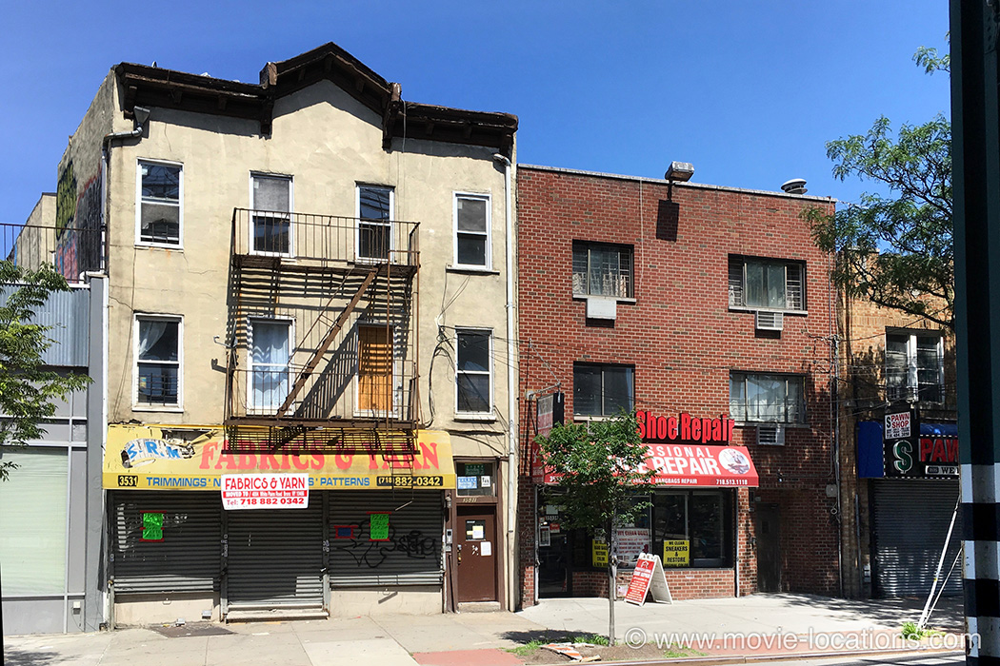

The Corleone mansion: 110 Longfellow Avenue, Emerson Hill, Staten Island
Don Corleone is gunned down: Mott Street, New York

Michael shoots Sollozzo and the police captain: White Plains Road, Bronx
Barzini is gunned down by the fake cop: New York County Courthouse, Center Street, Lower Manhattan, New York